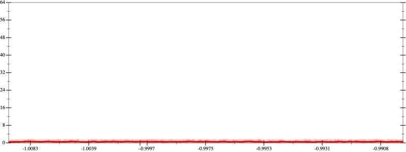
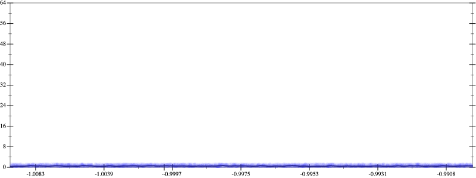
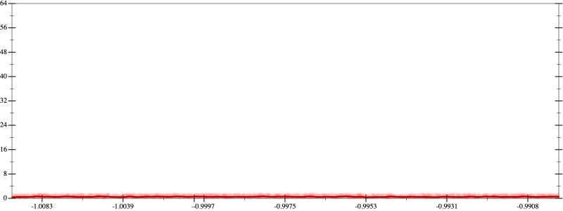
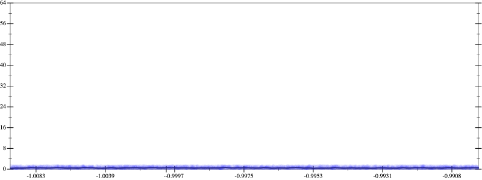
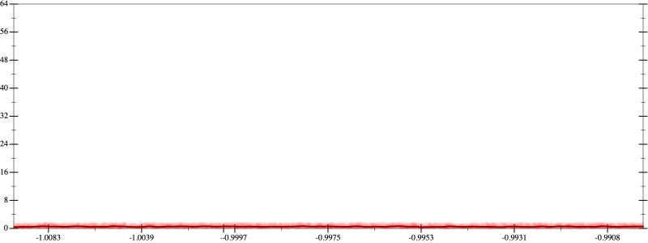
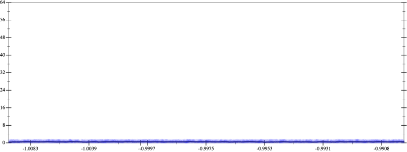
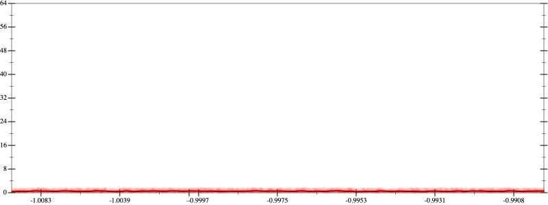
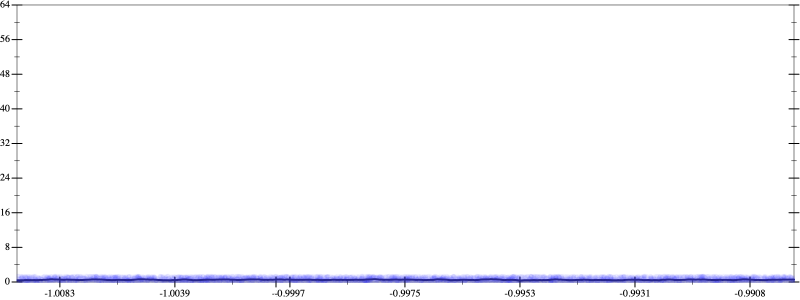

Bits error versus x
Your Program's Arguments
Results
Initial program 0.5
Time bar (total: 1.3m)Debug log
herbie shell --seed 1820507976 (FPCore (x) :name "2" :pre (and (>= x -1.01) (<= x -0.99)) (+ -2.0 (* 4.0 (* x x))))
 
